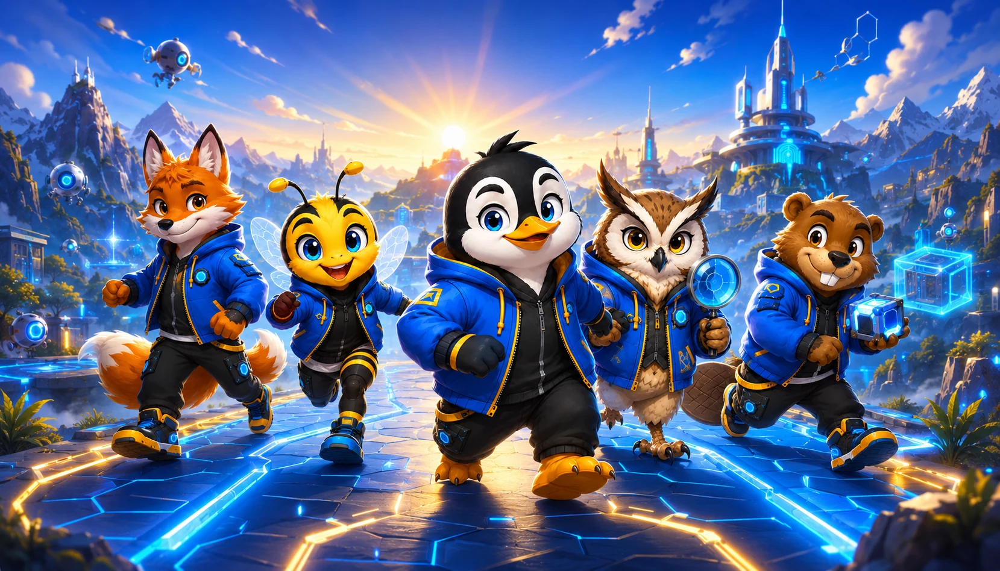
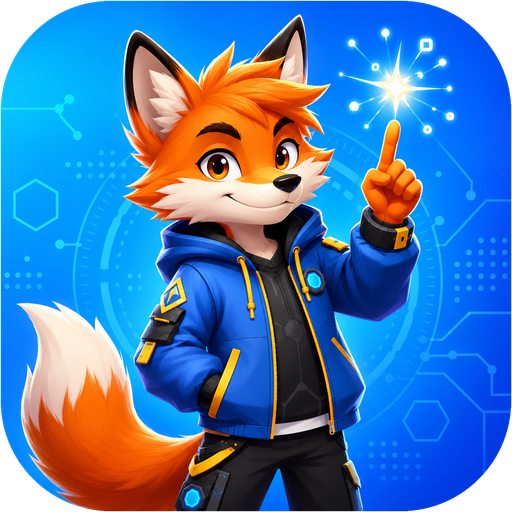
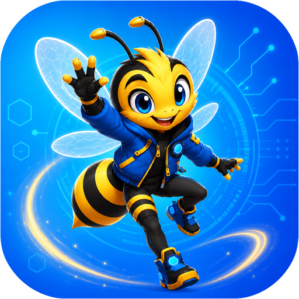
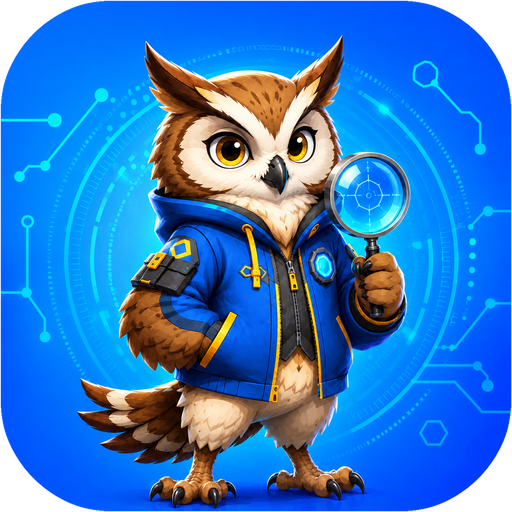
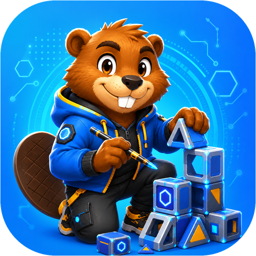
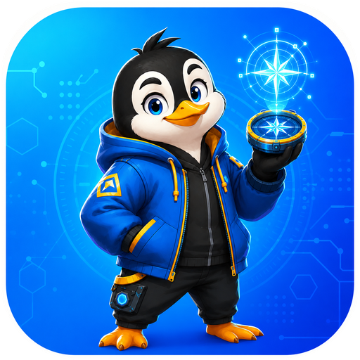
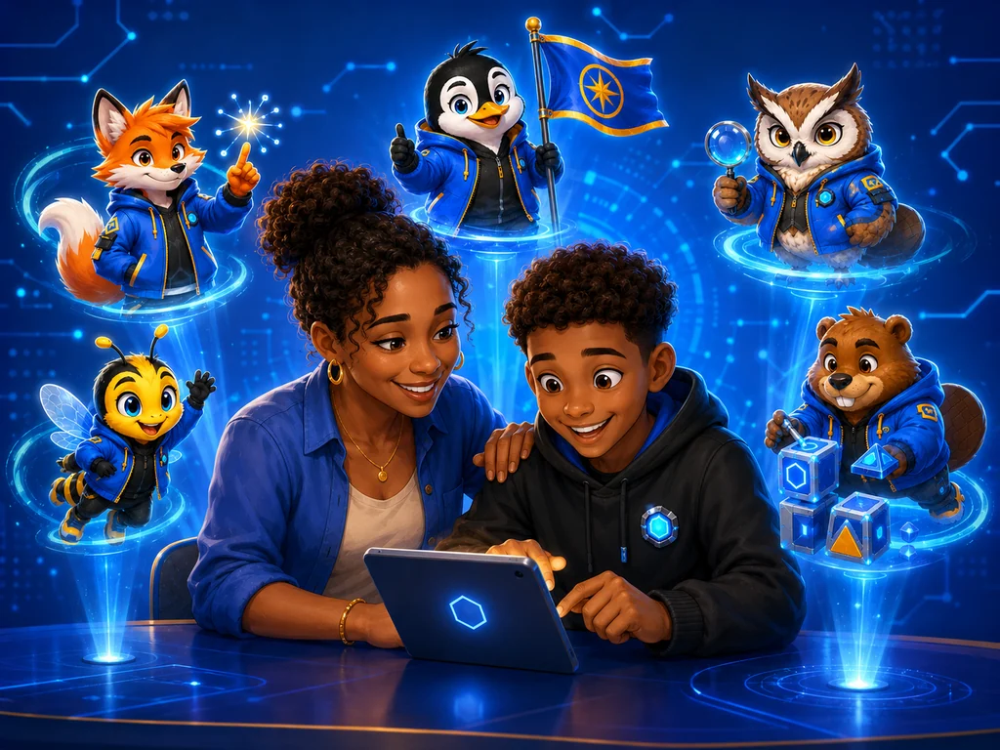
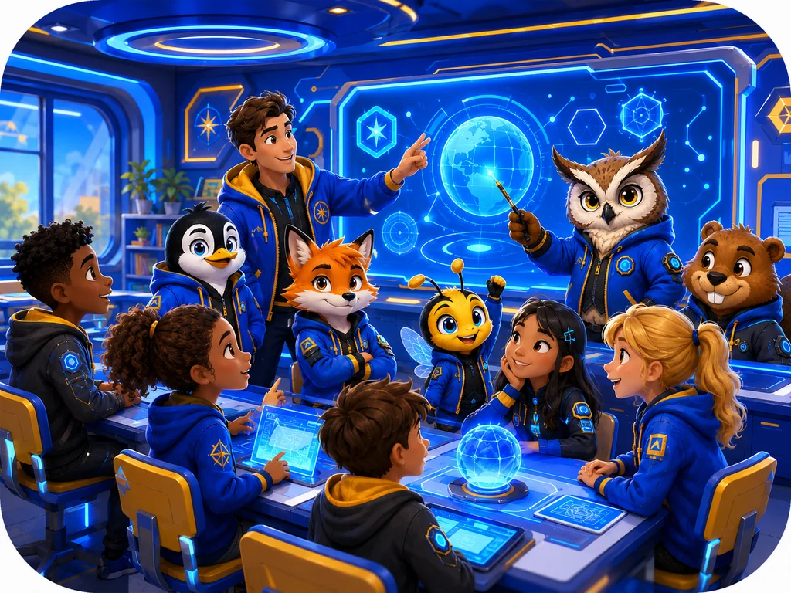

Voor kinderen van 9–12 · samen met een volwassene
Leer kinderen de baas zijn over AI
54 speelse avonturen waarin kinderen ontdekken wat AI kan, waar het de mist ingaat, en wanneer je beter zélf kunt denken. Geen chatbot. Geen account. Geen verslaving. Wél nieuwsgierigheid, kritisch denken en zelfvertrouwen.
Werkt op tablet, telefoon en computer · Nederlands en Engels

Geen chatbot in de app
Kinderen praten nooit alleen met een AI. De volwassene kopieert een kant-en-klare, kindveilige prompt naar de eigen AI-tool — en doet mee.
Geen account, geen kinderdata
Alle voortgang blijft op het eigen apparaat. Wij verzamelen niets — geen namen, geen e-mails, geen gedrag.
Ontwikkeling, geen verslaving
Geen streaks, geen scores, geen schuldgevoel. Elk avontuur eindigt met een vraag waar het kind zélf over beslist.
Een programma met een ruggengraat
Speels aan de buitenkant, gedegen van binnen. AI Explorer Academy is gebouwd op een expliciete visie, een uitgewerkt curriculum en de actuele stand van kennis over AI-geletterdheid.
Pedagogische visie
Wij optimaliseren voor ontwikkeling, niet voor schermtijd. Autonomie, kritisch denken en zelfvertrouwen staan centraal — vastgelegd in ons oprichtingsmanifest.
Lees onze visie →Ontwikkelkader & leerdoelen
Vijf ontwikkelgebieden, elf kerncompetenties, vijf oplopende niveaus en concrete leeruitkomsten — elk avontuur is eraan gekoppeld.
Bekijk het curriculum →Wetenschap & beleid
Aangesloten op de SLO-conceptkerndoelen digitale geletterdheid, het UNESCO AI-competentieraamwerk en actueel onderzoek naar kinderen & AI.
Bekijk de onderbouwing →"AI-output is het vertrekpunt. Niet het eindpunt. Een antwoord van AI is geen waarheid — het is een voorstel. Een kind mag vragen stellen. Twijfelen. Verbeteren. Verwerpen."
— uit ons oprichtingsmanifest
Kinderen groeien op in een wereld vol AI. De vraag is niet óf ze ermee werken, maar of ze zichzelf niet verliezen terwijl ze het leren. Daarom trainen wij geen prompt-trucjes, maar menselijke vaardigheden: nieuwsgierig onderzoeken, kritisch beoordelen, zelfstandig kiezen.
Vijf superkrachten, vijf gidsen
Elk avontuur traint één van de vijf AI-superkrachten — met een eigen mascotte als gids.

Ontdekken
Gekke vragen stellen en kijken wat AI ervan maakt — met Vonk de Vraagvos.

Samenwerken
Samen iets maken waarbij het kind de baas blijft — met Zoem de Samenbij.

Controleren
Feiten checken, fouten vangen, bronnen najagen — met Loep de Speuruil.

Verbeteren
Feedback geven tot het góéd is — met Bikkel de Bouwbever.

De baas over je AI
Zelf beslissen wanneer AI aan of uit gaat — met Kompas de Kapitein-Pinguïn.

Zo werkt een avontuur
- Kies een avontuur. Filter op superkracht, niveau, tijd of "met wie". Van 15 minuten tot een flinke missie.
- Doe en denk samen. Het kind doorloopt de stappen; op het juiste moment plakt de volwassene onze kindveilige prompt in ChatGPT, Claude of een andere AI.
- Het kind beslist. Elk avontuur eindigt met een eigen keuze en een reflectievraag — nooit met "de AI had gelijk".
Wat gezinnen en scholen ervan vinden
Uit onze eerste testrondes met ouders, leerkrachten en kinderen.
"Voor het eerst hadden mijn dochter en ik een écht gesprek over wat AI nou eigenlijk is. Zij betrapte de chatbot op een fout — en was daar de rest van de week trots op."
Ouder van een meid van 10na het avontuur "Spoor de Flater Op""Eindelijk materiaal dat ik morgen in de klas kan gebruiken zonder zelf iets te hoeven ontwikkelen. De gesprekstips per kaart zijn goud waard."
Leerkracht groep 7over de begeleidersmodus"De AI zei precies wat ik wilde horen en toen had ik hem door. Ik ben er nu de baas over."
Explorer, 11 jaarna "De Slijmtest"Stempels, geen scores
In het Explorer Paspoort verzamelen kinderen stempels per superkracht. We vieren herhalen en ontdekken — niet snelheid, niet ranglijsten.
Wie alle avonturen van een superkracht voltooit, wordt Meester. En wie ze allemaal haalt? Master Explorer.


Voor de klas: morgen inzetbaar
- 54 kant-en-klare lesactiviteiten (15–30 min), gekoppeld aan 11 kerncompetenties voor AI-geletterdheid
- Geen accounts of leerlinggegevens — AVG-proof zonder gedoe
- Duo-, team- en klasvormen, plus offline "Buitenwereld"-avonturen zonder scherm
- Begeleidersmodus met gesprekstips per kaart, in het Nederlands en Engels
Voor ieder gezin betaalbaar
AI-geletterdheid mag geen luxe zijn. Daarom blijft proberen gratis en houden we prijzen laag.
Nu
€0
Alle 54 avonturen gratis te gebruiken tijdens de startperiode. Geen account nodig — begin meteen.
Probeer gratisBinnenkort
Gezins- & schoollicenties
Eerlijk geprijsd, met korting voor wie het nodig heeft. Interesse? Laat het weten en denk mee.
Houd mij op de hoogteZet jezelf of je school op de wachtlijst
Als eerste horen over gezins- en schoollicenties, nieuwe avonturen en het Master Explorer-diploma? Schrijf je in — we mailen alleen als er écht iets te melden is.
Veelgestelde vragen
Zit er een chatbot in de app?
Nee, bewust niet. Kinderen chatten nooit alleen met een AI. Bij elk avontuur staat een kant-en-klare, kindveilige prompt die de volwassene kopieert naar de eigen AI-tool (zoals ChatGPT of Claude). Zo blijft er altijd een volwassene bij het gesprek.
Welke AI-tool heb ik nodig?
Elke AI-chat werkt: de gratis versie van ChatGPT, Claude, Copilot of Gemini. Sommige "Buitenwereld"-avonturen gebruiken helemaal geen AI — die spelen zich buiten het scherm af.
Hoe zit het met privacy?
Er zijn geen accounts en wij verzamelen geen gegevens. De voortgang (stempels, favorieten) wordt alleen op het eigen apparaat bewaard. Wat er in de AI-tool gebeurt, blijft binnen het account van de volwassene.
Voor welke leeftijd is dit?
Gemaakt voor de bovenbouw van de basisschool (9–12 jaar). Jongere kinderen kunnen prima meedoen met extra hulp; slimme twaalfplussers vinden in niveau 4 en 5 genoeg uitdaging — van slijmende AI's betrappen tot je eigen chatbot-regels kraken.
Werkt het ook op de telefoon?
Ja — de app werkt op tablet, telefoon en computer, en is te installeren via "Zet op beginscherm". Daarna werkt hij zelfs offline.
Klaar voor het eerste avontuur?
Binnen één minuut bezig — geen account, geen download, geen gedoe.
Start de app